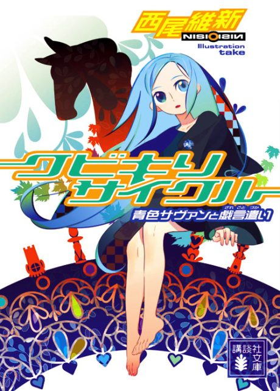
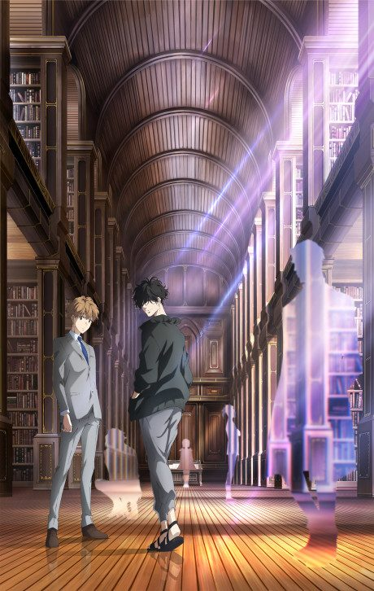

Kubikiri Cycle: The Blue Savant and the Nonsense User
クビキリサイクル 青色サヴァンと戯言遣い
A young man accompanies a genius girl to an island inhabited by geniuses, where a murder takes place.
After the anime, read the light novel from Volume 2.
7.7AniList score
—Animeter, no votes yet
8episodes, season 1
Rate it or report where you stopped
Anime finished. Where does the story go next?
Start at Volume2
The 8-episode anime adapts the entire first volume, so start with Volume 2 (Strangulation: Kubishime Romanticist).
11
Season 1Start reading here
More like Kubikiri Cycle: The Blue Savant and the Nonsense User
 Original8.6
Original8.6
 Original8.0
Original8.0
 Original7.8
Original7.8
 Done8.8
Done8.8

Manga Ch. 697.4 Original8.1
Original8.1
 Manga Ch. 1088.4
Manga Ch. 1088.4
 Original7.6
Original7.6
 Original8.4
Original8.4
Original7.4
The Millionaire Detective - Balance: UNLIMITED Original8.5
Original8.5
 Manga Ch. 318.1
Manga Ch. 318.1